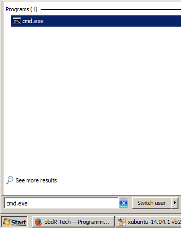
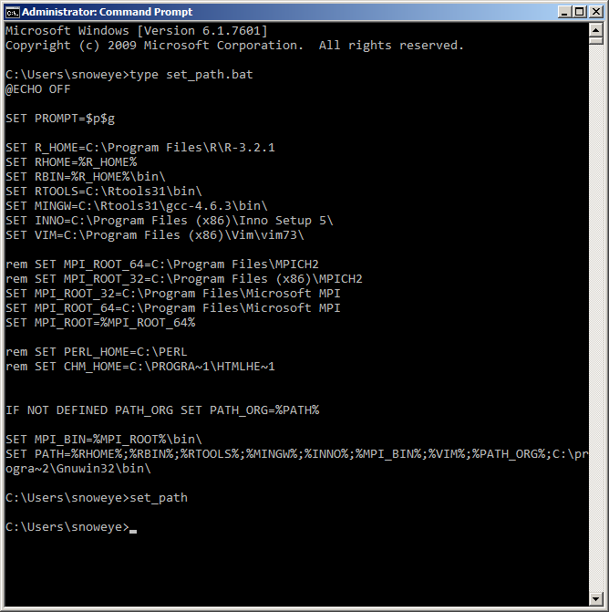
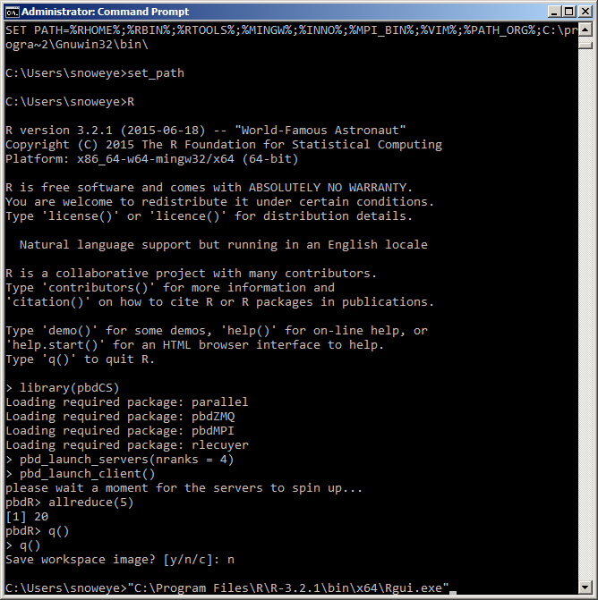
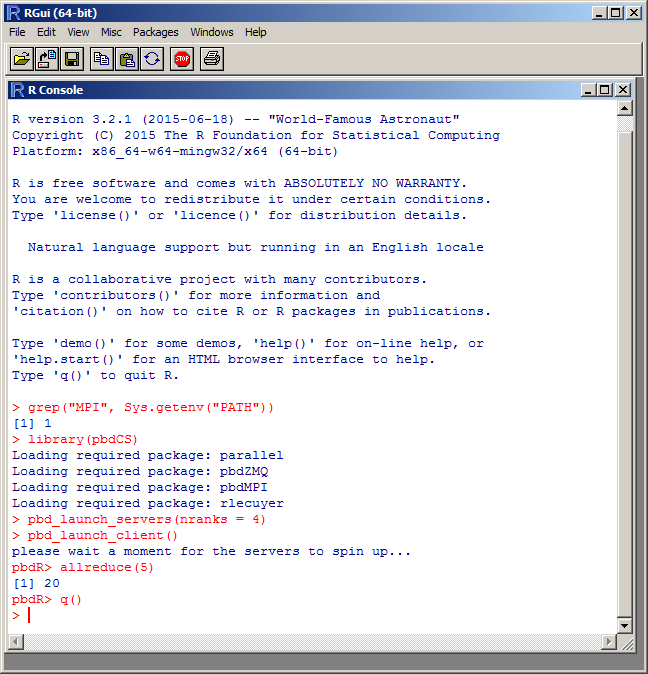

This Tutorial 4 is all about two new pbdR packages,
pbdCS and pbdZMQ, on windows system.
The simple four steps are given in next with very brief explanations.
cmd.exe to
"Start -> Search programs and files -> cmd.exe".

R and MPI.

R from command line.
pbdCS and pbdZMQ libraries
inside R.
pbdR servers by
pbd_launch_servers(nranks = 4).
pbdR client by
pbd_launch_client().
allreduce(5).Rgui.exe to have a R GUI and go to next
Step 3.

R GUI instead typing in the command line.R is executed from a command line with
MPI in the environment variable PATH
in order to have 4 servers run correctly.
